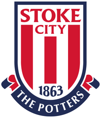

Click any card with a PDF icon to download the written reference.
Tony Loftus
Joe's current futsal head coach and author of his Individual Player Development Plan. Available to speak to his technical ability, physical presence and hold-up play as a pivot.

Lee Moore MSc ASCC
Nine years of strength & conditioning — the definitive voice on Joe's speed, running mechanics and development into an explosive, robust athlete.
Danny Fowler
Runs Joe's 1v1 technical work — on his two-footed ball manipulation, finishing and athletic, game-realistic profile.
Mark Hodgson
Has coached Joe since age four — on his two-footed control, first touch, passing range and calmness in possession.
Red House School
School sport reference — on his ball control, vision, physical presence in possession and reading of the game.
Andy Frost
Available for a verbal reference on Joe's football ability and physical profile. Telephone number available on request.
